Fixing a 1973 Schwinn Bicycle

Background
While I was working at Collins my roommate unexpectedly left, and gave me his bicycle for free.
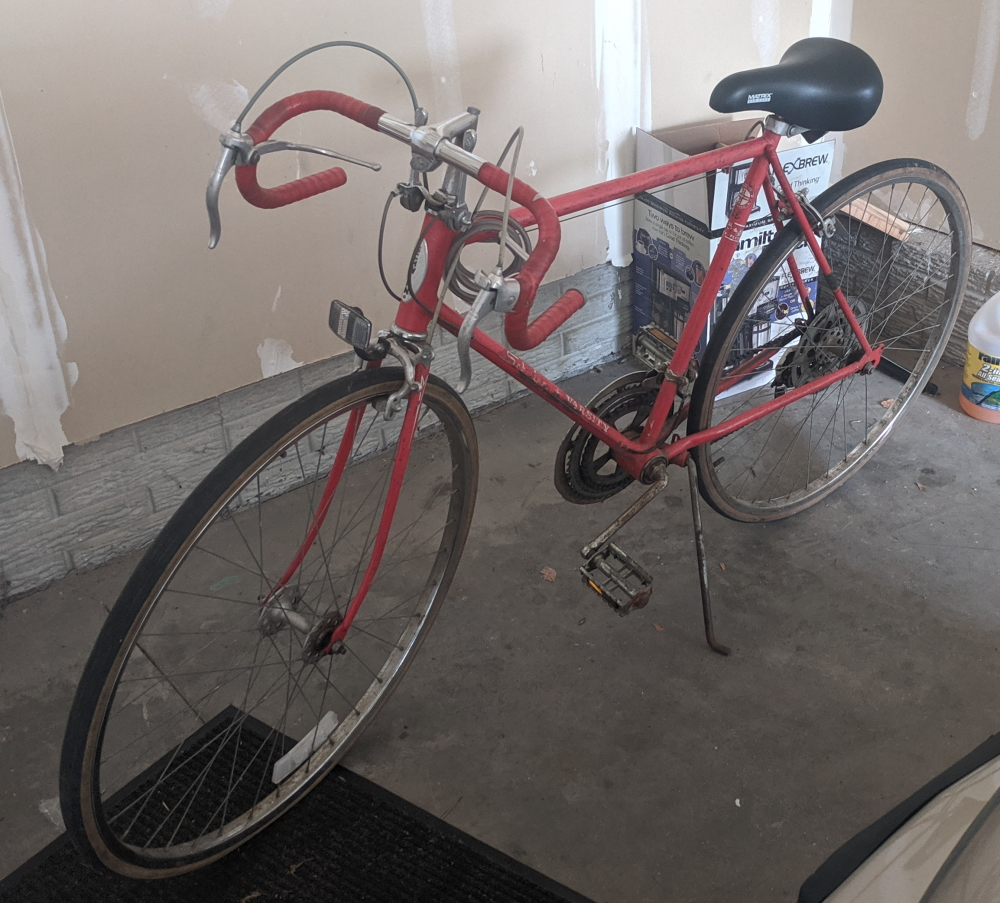
After closer inspection, the bike was a 27” 1973 Schwinn Varsity 10-speed. It was in pretty rough shape. The front tire didn’t hold air, neither tire had any tread left (if there was any to begin with), and just in general, the bike looked neglected.
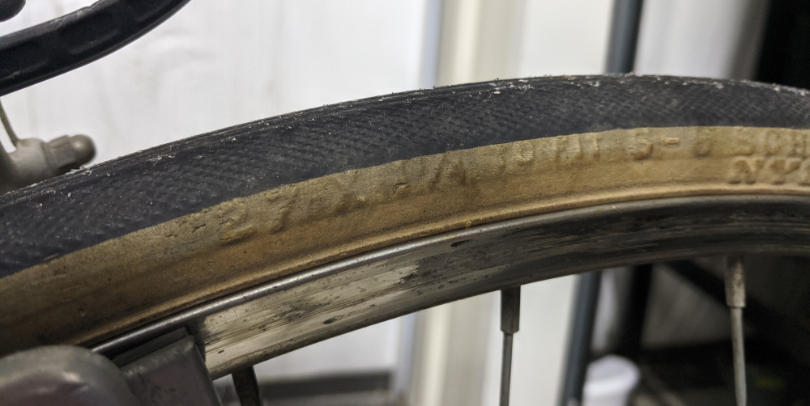
Since I got the bike for the wonderful price of free, I decided to keep it and fix it up. I hadn’t owned a bicycle in many years and frankly didn’t know much about bike maintenance, but I thought this would be a good project to learn with without investing too much money.
Project Goals
To begin with, I immediately decided that I wanted to simply repair the bike and not restore it. The major reasons for this were that I wanted to save money and make the bike what I wanted. Also, the Varsity line of bicycles from Schwinn aren’t exactly rare or collectible, so I didn’t feel bad at all for not restoring it.
Parts
Here are all the parts that I ended up purchasing for the bike.
Tubes
I purchased two 27” Bell Standard Bike Tubes. While the rear tire held air alright, I decided to just replace both tubes at the same time since I guessed (correctly) that they were both ancient. I just picked these since they were inexpensive, highly rated on Amazon, and were Schrader valves.
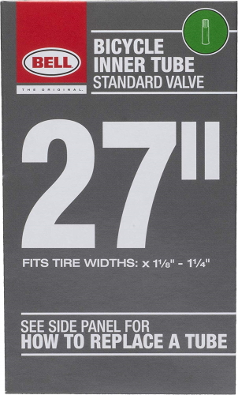
Tires
This was probably the biggest decision for the whole bike. I ended up going with two Continental Ride Tour tires. The reason for this was that I currently live in Iowa, and we actually have snow here, so I wanted some tread on the tires. Also, while I could have gotten tires that more closely matched the original ones with gum walls (such as these), I decided not to. To me at least, that rubber just looks more “plastic-y” and not as good quality.
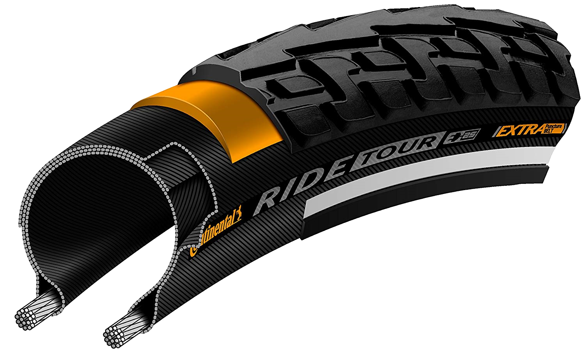
Amazon surprised me by not folding or rolling up the tires at all. No, instead, they shipped the tires in their normal resting shape. I was really surprised by the massive box they left at my door.
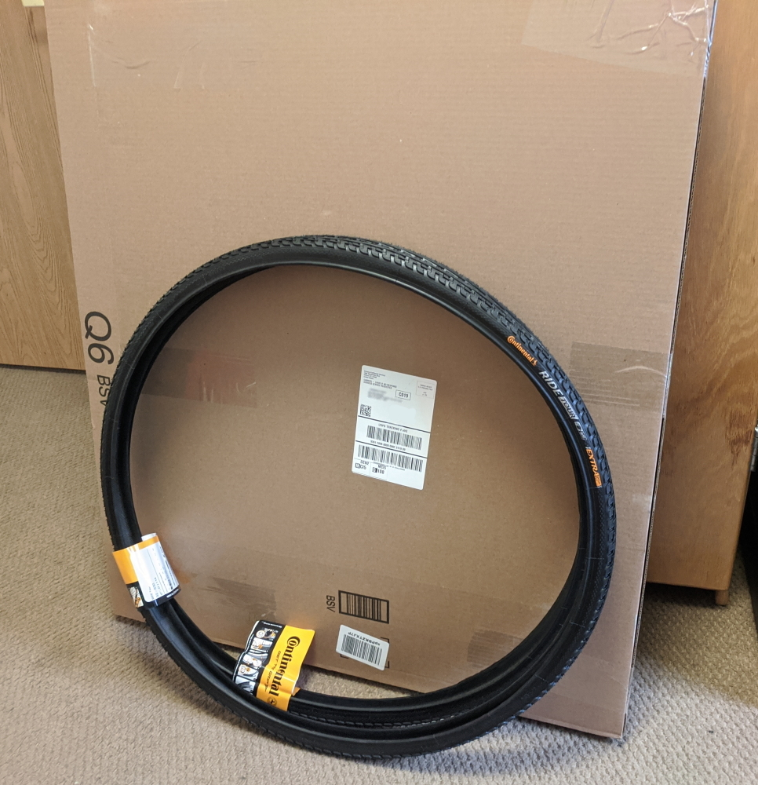
Rim Tape
If you were like me and didn’t know what rim tape was, it’s just tape that you put around the rim of the wheel so that the spokes don’t puncture the tube.
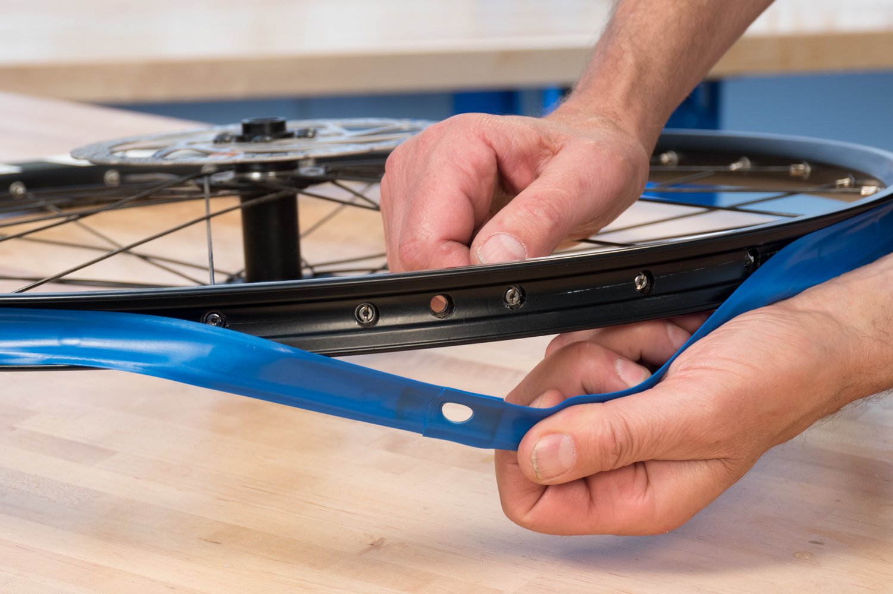
When I was changing the tires on the bike, I didn’t realize I would need this and my local bike shop was closed, so I substituted some basic electrical tape from Walmart.
Handlebar Endcaps
While not very important, I didn’t like that the handlebar endcaps on my bike didn’t match. One of them was also broken and had sharp metal. I went on Amazon and got a 4-pack of various colors that were easily removable. Buying a single pack on Amazon was close to the same price, so I decided to get multiple colors so I could pick the one I liked the most.
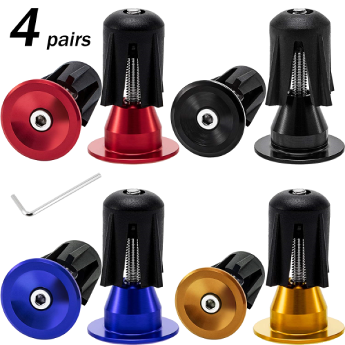
Brake Pads
The brakes were old, so I got some new ones at Walmart.
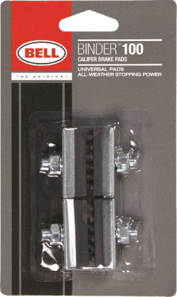
Shifter Cable
I ended up needing to buy a new shifter cable. I just went to my local bike shop and got a single one for like $5.
Handlebar Tape
The old handlebar grip tape appeared to be original. However with the age, there wasn’t much grip left of the “grip” tape. It was more like a hard plastic at this point. You can really tell by the shininess in this picture.
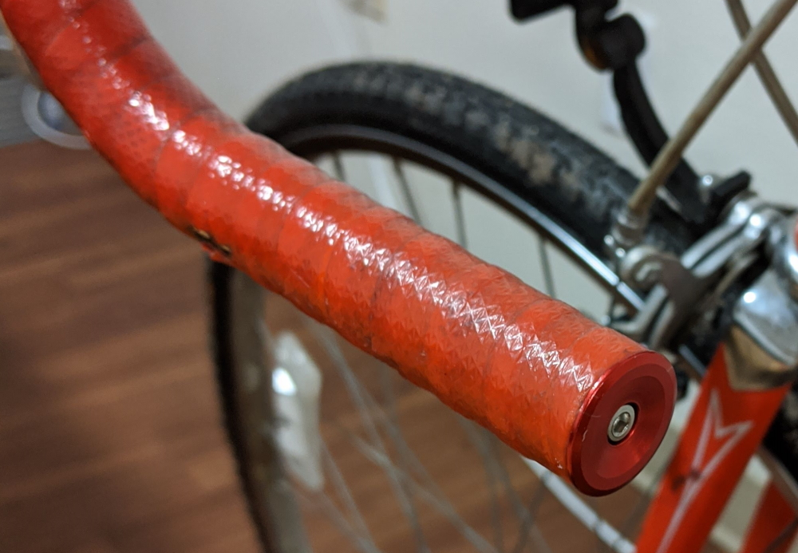
There were a number of tears in the tape as well. I went to my local bike shop (again) and got some new orange grip tape that actually matches really closely to the original. I also paid the shop to put it on for me because I didn’t trust my own abilities to wrap it well.
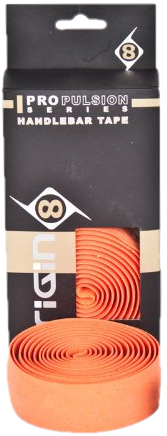
Water Bottle Cage
Lastly, I want to take this bike on some longer rides, so I got a basic water bottle cage.
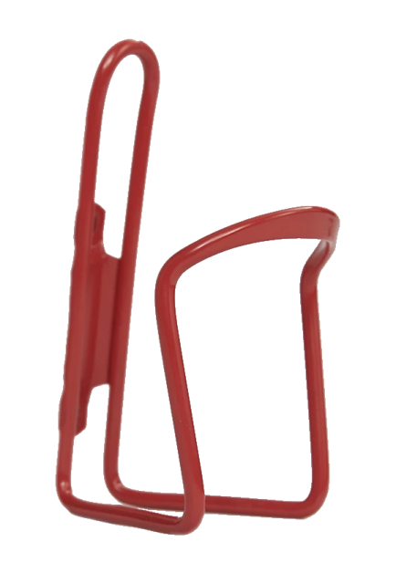
While the water bottle cage I got is a very bright red and the bike is more of an orange-red, it looks close enough.
Tools
WD-40
Chain Lube
I just went to Walmart and grabbed whatever they had.
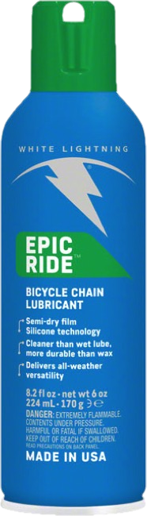
Tire Levers
I had never heard of these things before. In case you’re like me and don’t know what they are, they’re basically little pry bars that help you put a bike tire on a rim.
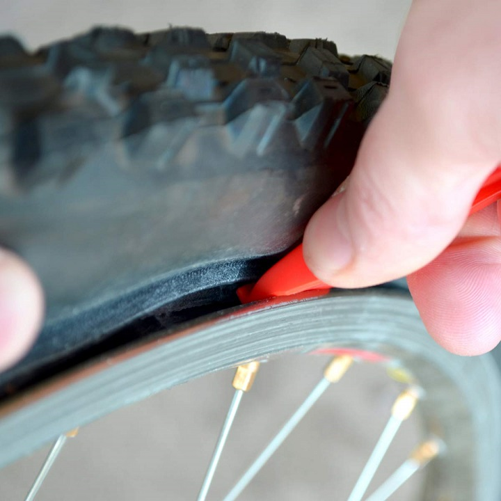
I bought a 4-pack on Amazon.
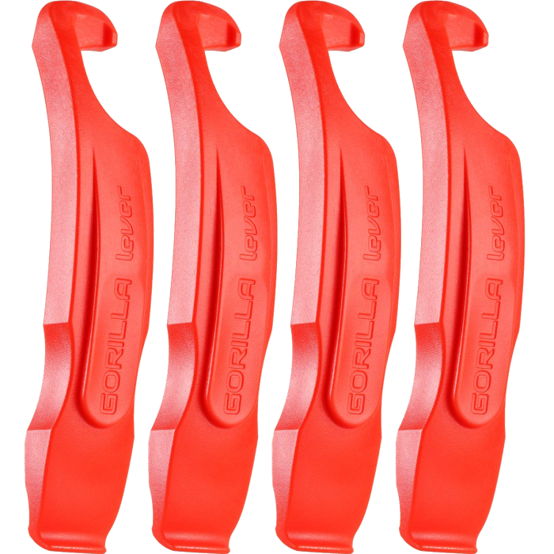
Crescent Wrenches
I went to a hardware store and got two really basic Craftsman adjustable crescent wrenches. Nothing special about these at all.
Wire Brush
I also got a basic metal wire brush during my Walmart run to help clean off gunk.
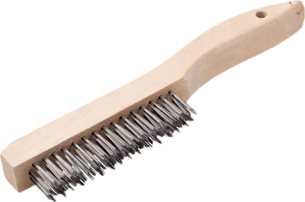
Air Pump
Lastly, while at Walmart I got a Bell air pump.
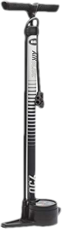
Process
First Work
Well, to start, one of my friends was very kind and let me borrow his living room to work on the bike.
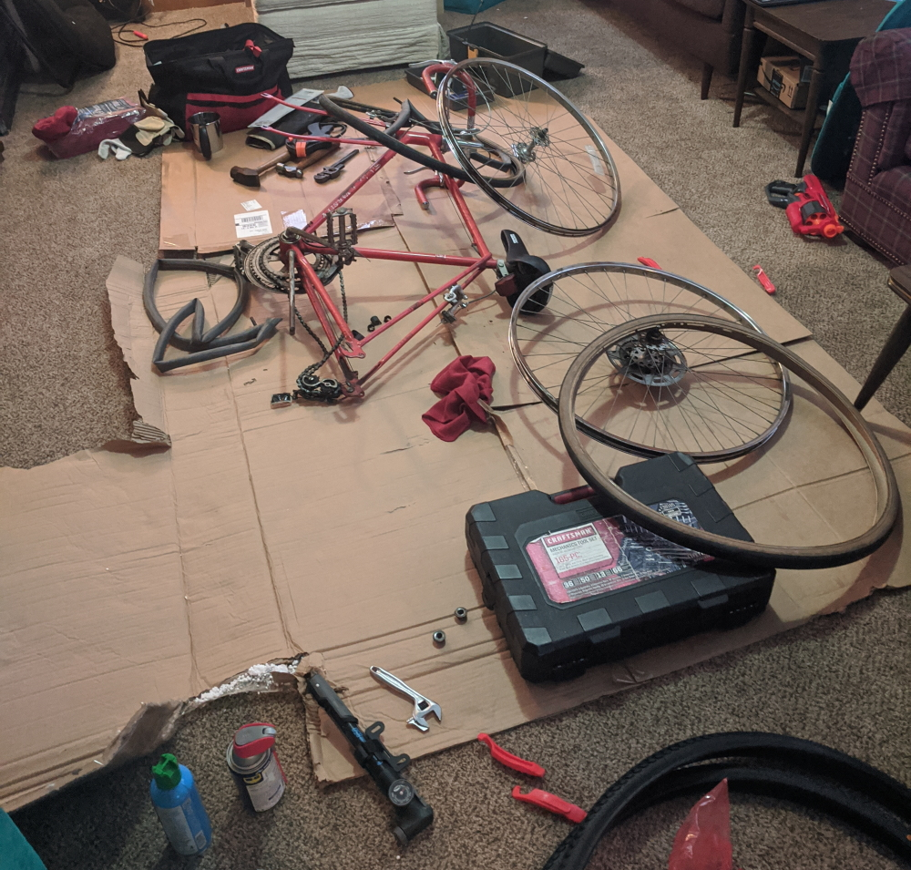
With a bit of percussive maintenance, we got both the wheels off. Once the wheels were off, it was more obvious how bad of shape the tires were in. While taking the tires off the rims, you could hear the rubber cracking.
Also during this process, we discovered that the rim tape on the front rim was completely falling off. As mentioned above, I got some electrical tape and just wrapped it around twice and cut a hole for the tube stem. It’s worked fine so far. The rim tape on the rear wheel wouldn’t come off easily while I was going to replace that as well, so I decided to just leave it on.
After replacing the tubes and tires, we changed out the brake pads and handlebar endcaps. The endcaps ended up being a bit a tricky as one of the existing ones did not have a screw and was just press-fit. It took quite a bit of patience and prying to get it out.
Lastly, we tried to clean the bike as much as reasonably possible and lube everything up.
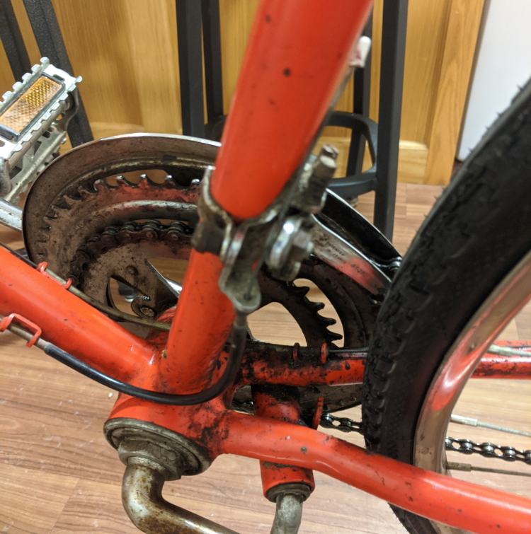
During this whole ordeal, we discovered that the frame of the bike is more than likely bent. When we first re-attached the rear wheel in a normal position, it was rubbing against the frame really badly on the front left of the tire. We ended up having to move the left side of the wheel pretty far forward in its slot and just tightening it down really hard in order to get it roll straight.
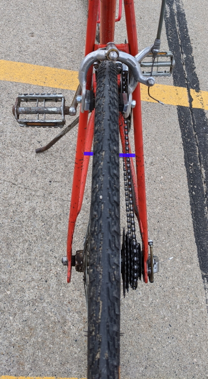
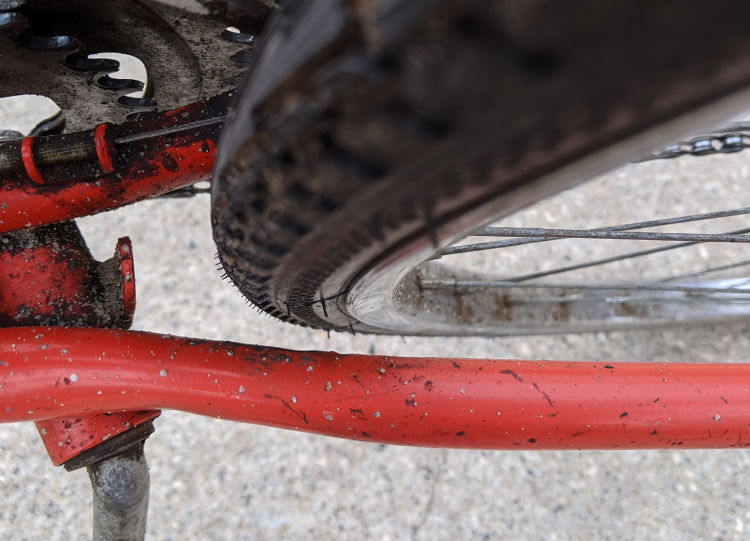
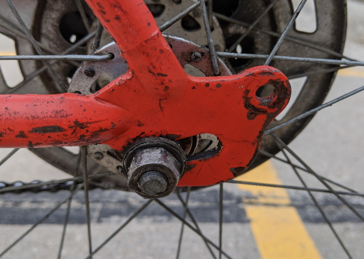
More Work
After reassembling the bike and taking it home, I quickly realized that the rear shifter wouldn’t shift worth a damn (I also taught myself to use the shifter. There’s no dials to spin like I’m used to on mountain bikes, but levers you pull to manually move the chain between gears. You just listen and feel for the right spot). The bike has 2 gears in the front and 5 in the back. While the front shifter worked alright, the rear required a truly ridiculous amount of strength to shift more than one gear. I had never worked on a bicycle derailleur before, but after putting on my engineer’s thinking cap and looking at it and playing with it for about 10 minutes, I realized the problem. The cable was far too loose. So, I pulled out my pliers, loosened the screw at the end of the cable, and gave it a good yank to tighten it up. Or so I tried to. It was frayed at the end and wouldn’t budge.
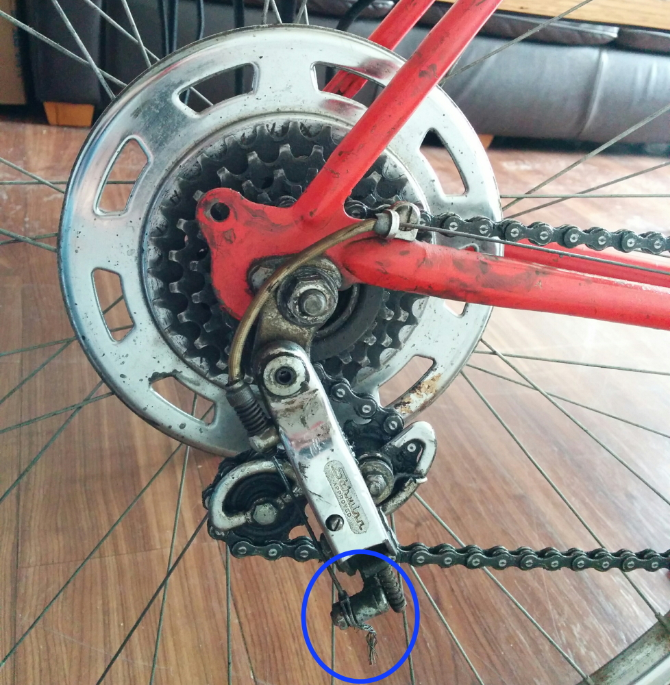
So I bought a new cable and figured out how to install it. The old cable was a tough bastard that didn’t want to come out without a fight.
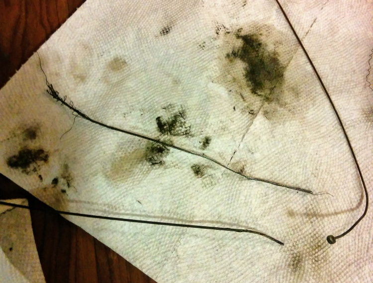
After cursing myself for not cutting the old cable into small chunks to remove, I got the cable installed and tightened. After some adjustment, it fixed all of my shifting problems.
At this point, the bike was working pretty well.
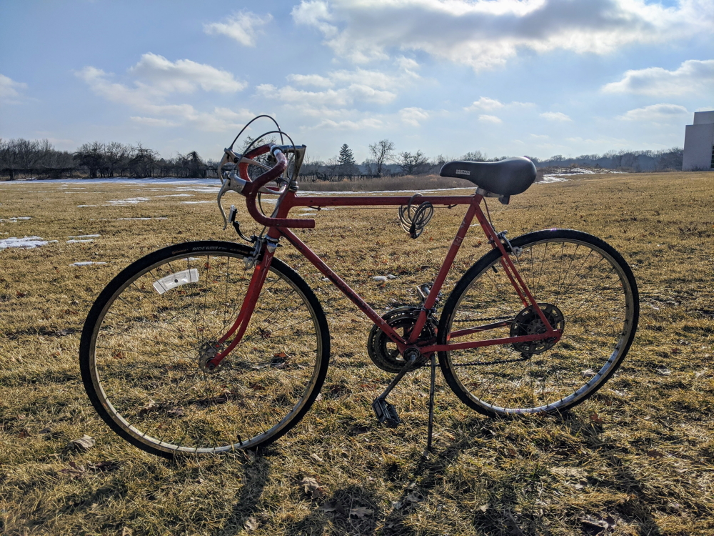
Final Work
I decided to also get the grip tape changed and add a water bottle holder for the sake of longer rides in the future.
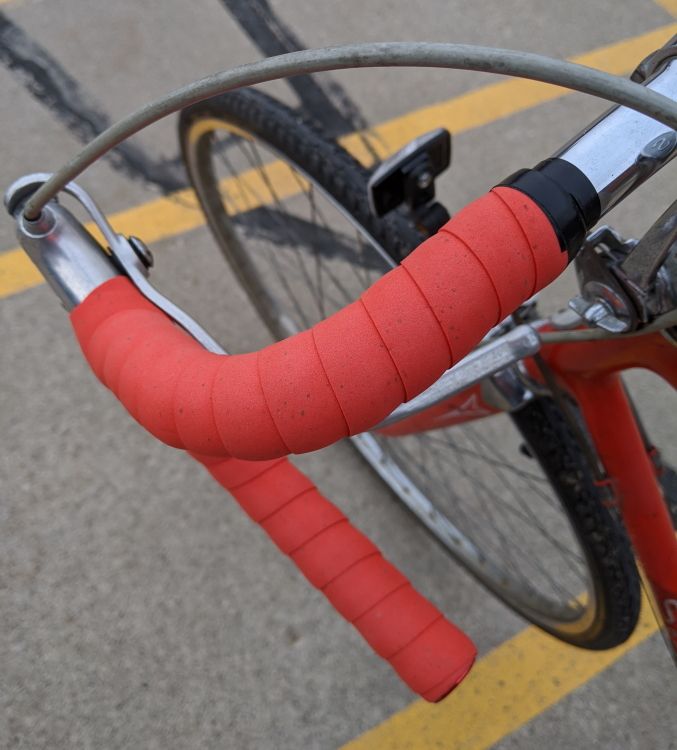
When I bought the water bottle cage, I totally forgot that mountain bikes have holes you normally screw it into. My road bike had no such holes so I had to get creative.
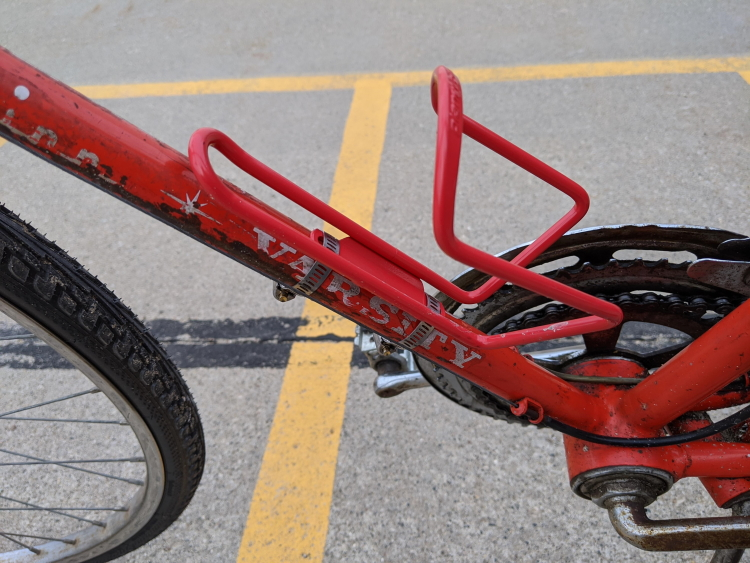
Now, I know what you’re thinking: “Won’t that damage the paint?”. Yes, yes it will, unless I put some electrical tape underneath of it. However, the paint is already so beat and rusted that I truly don’t care.
Finally, for the sake of safety when I ride at night, I got some little silicon rechargeable LED lights that wrap around the handlebars and frame.
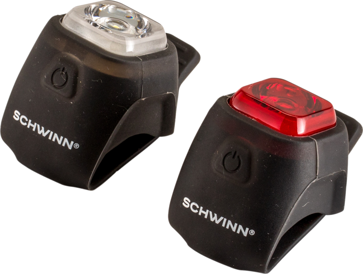
I like them a lot. They’ve got three modes: solid bright, solid dim, and blinking dim. They recharge via MicroUSB and they come on and off super quick, so I take them off whenever I park the bike so they don’t get stolen.
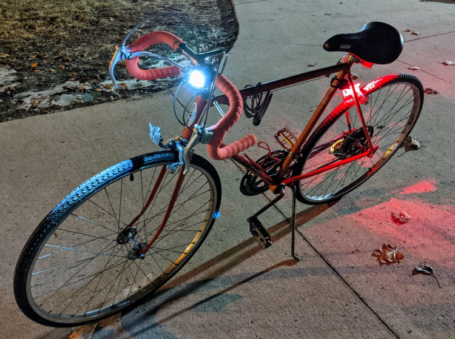
Yes, I’m aware that the rear light is basically pointing straight at the tire. I’m working on 3D printing parts to replace the existing reflectors with mounts I can put these lights on instead.
Result
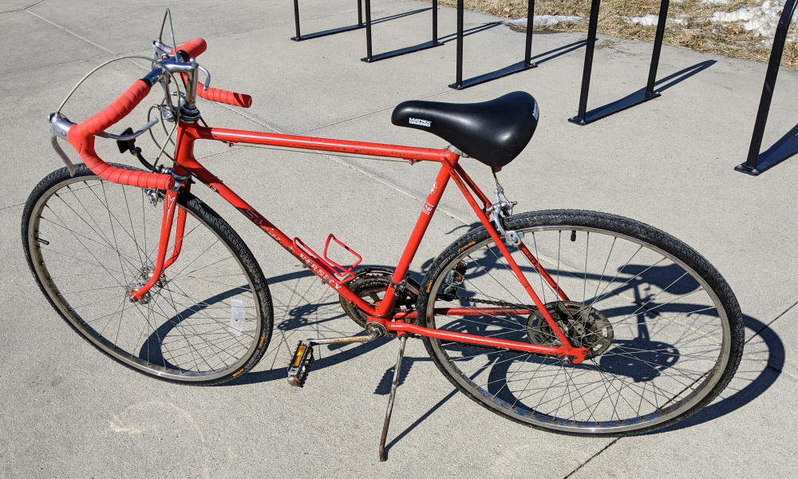
I think the bike looks pretty good in it’s own special patina way.
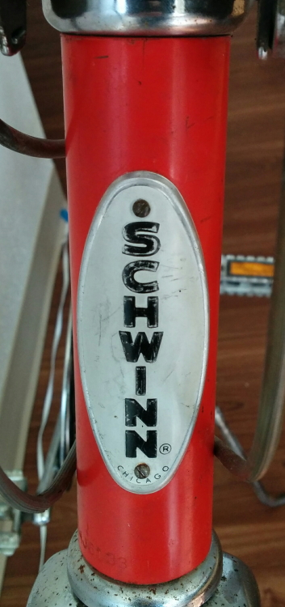
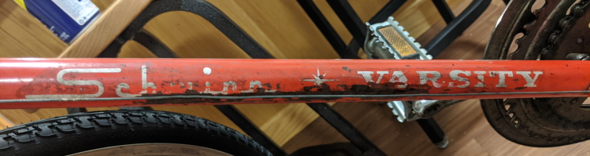
I don’t have any plans to repaint the bike. For starters, spending the time and money to properly disassemble the whole thing, strip all the paint, clean off the rust, and repaint it would exceed the value of the bike itself. Also, why would I put in the effort for such a low-end crapped out bike anyways? Lastly, with the bike not looking particularly great, it lowers the chance of it getting stolen while on campus.
Future Work
Further Disassembly
This summer I’ll have more time and tools to work on the bike, so I’d like to disassemble some more of the bearings and brake assembly to clean them and give them a good lube. I will have a power washer available, so I’d really like to use that clean a lot of the gunk off.
Painting Over Phone Number
A previous owner was so kind as to scratch their phone number into the frame of the bike. To make it even better, they started on the side, then decided against it and started over on the top.
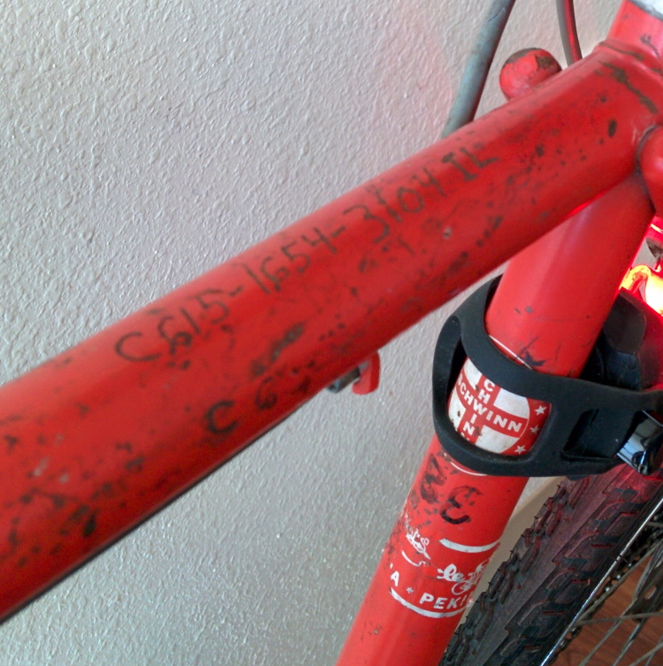
I want to get a file and a bit of close-enough spray paint to cover it.
Conclusion
Getting two adjustable crescent wrenches was a very smart move. Firstly, for getting two as that way myself and a friend can work simultaneously. I bought two because I thought the wheels were going to be stubborn to get off and require me to brace the other side, but that ended up not being an issue. Second, getting adjustable wrenches (and not just a set) was a stroke of genius. For some reason, a lot of the bolts and nuts on the bike aren’t quite the same width on every side, requiring me to constantly adjust the size of the wrench a little bit. I don’t think a set of fixed size wrenches would have worked at all.
Additionally, buying four tire levers was also really smart. Again, this was because a friend and I could both easily work together. I was just going with the Amazon’s choice and they happened to come in a pack of four.
I’m really thrilled with how the bike has turned out. I probably spent around ~$150-$200 on this at the end of it all. Could I have gotten a better bike from craigslist or a pawn shop for what I’m using it for, for less? Almost certainly. However, it was a fun project that I’m proud of and I got to learn a lot about bicycles and bike maintenance during it. It may look ugly as sin, but it’s mechanically pretty sound and I have the satisfaction of having done almost all of the work on it myself.